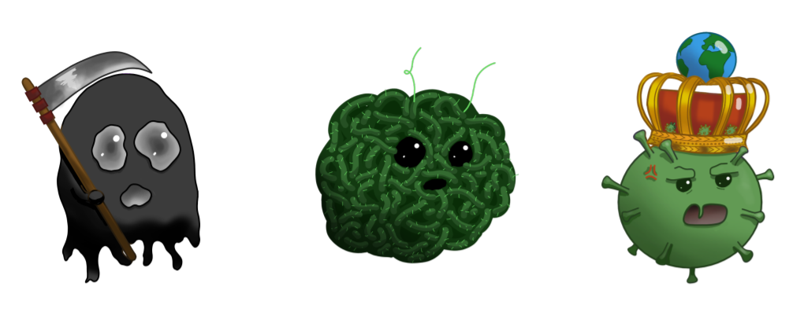

Notre jeu est donc un roguelike qui prend place au coeur des différentes pandémies majeures qui
sont arrivées dans l'histoire.
Voici à quoi ressemble notre personnage. Il va donc devoir évoluer dans ces périodes sombres de notre histoire
pour ainsi combattre ces pandémies qui seront modélisées par les virus associés.

Nous avons dans l'ordre la peste noire :
Qui a été assez simple à représenter un fantôme et une faux,
deux éléments ayant un fort lien avec
la mort, pour représenter la maladie ayant fait le plus de victimes au
cours de l’histoire.
Deuxièmement le choléra, qui est, contrairement aux autres boss, une infection
causée par une bactérie. Il est représenté ici comme un amas de bactéries désorganisées.
Enfin pour finir en beauté nous avons la COVID-19 que nous connaissons tous, nous l'avons représenté par ce qu'il est naturellement c'est à dire
un virus de la famille de coronavirus qui sont tous en forme de couronne. Ensuite nous lui avons mis une couronne car il sera notre boss de fin car de nos jours il "gouverne" notre monde.
Passons maintenant à la présentation des contrôles ainsi que des armes utilisable.
Dans notre jeu comme montré ci-dessus nous avons un controle du personnage des plus simple qui utilise les touches Z,Q,S,D
qui permetteront à notre joueur de se déplacer dans toutes les directions Nord,Ouest,Sud,Est.
Enfin pour terrasser ces boss et les nombreux monstres les accompagnants vous aurez le choix entre deux armes
pour vous aidez l'épée et un bâton magique qui ont tout deux des caractéristiques différents. Tout d'abord il faut savoir que les dégâts par
seconde des deux armes sont les mêmes, mais pour le bâton magique nous avons une attaque à distance qui coûte de la mana.
Pour les utiliser
vous n'avez qu'à faire un clic gauche sur l'écran et vous allez utiliser votre attaque qu'elle soit au corps à corps ou à distance.
Voici ci-dessous à quoi ressemble ces deux armes.